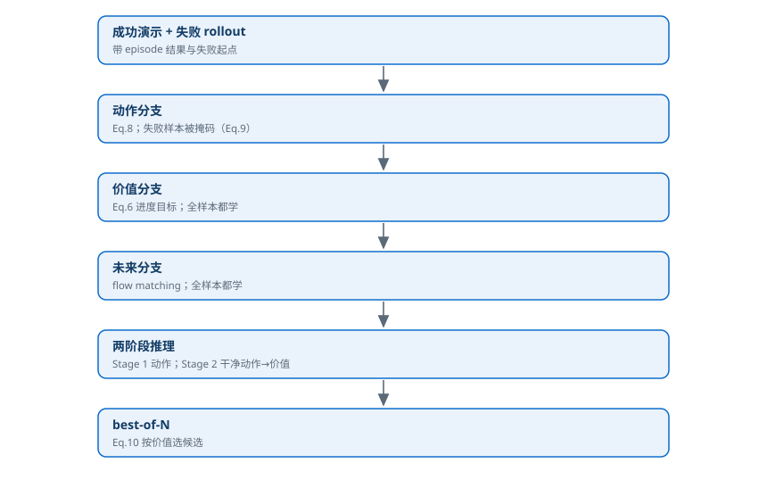

act-then-imagine：动作条件未来 + 进度价值；失败样本掩动作、保留后果；两阶段推理 + best-of-N
FACT 把「该模仿什么」和「该预测什么」分开：失败轨迹的动作不学，但失败的后果（未来视频、进度价值）要学——所以价值头能识别坏动作。
| 项 | 值 |
|---|---|
| 骨干 | Wan2.2-5B 初始化；动作 adapter + 共享 DiT |
| 动作块 | H=48；未来帧偏移 [0,H/4,H/2,3H/4,H] |
| 损失权重 | w_a=20，w_v=w_I=1；λ_fail=1 |
| 结果 | RoboTwin Clean/Rand. 平均提升（论文表 1） |
| 层级 | 内容 |
|---|---|
| L1 计算理论 | 利用失败数据同时提升策略与后果预测；约束：失败动作不可模仿，但失败后果有信息量。 |
| L2 表征与算法 | 表征：token 序列 [P_ref‖A_pred‖G_gt‖V‖I]，V/I 只看干净 G；算法：act-then-imagine + 失败掩码 + 进度价值目标。 |
| L3 实现 | Wan2.2-5B；H=48；w_a=20、w_v=w_I=1；两阶段推理 + best-of-N。 |

物理：失败教「后果」，不教「动作」；价值头因此能识别坏动作。
物理：动作条件的世界分支：这个动作导致什么。
物理：跨 episode 可比的进度。
物理：失败动作的进度目标下调（λ_fail=1）。
物理：行为与后果解耦。
物理：推理期用价值给候选打分。
仓库 Bariona/FACT：world_action_model/trainer/wa_casual_trainer.py（源码级）。
action_loss_mask = batch['action_loss_mask'] # 1=成功, 0=失败
def _masked_mean(loss, mask):
# 物理：失败样本动作项置零（Eq.9）
m = mask.reshape(-1)
return (loss*m).sum() / m.sum().clamp_min(1e-8)
def fact_train_step(batch, model):
# 物理：动作只学成功；价值/未来全样本学
pred_action, pred_value, pred_future = model(batch)
L_act = _masked_mean(action_loss(pred_action, batch.a), action_loss_mask)
L_val = mse(pred_value, batch.value_target) # Eq.6
L_fut = flow_mse(pred_future, batch.future_latents)
return 20.0*L_act + 1.0*L_val + 1.0*L_fut
def fact_infer(obs, instruction, N=1):
# 物理：先出动作；需要时再评估后果
a = denoise_action(obs, instruction, steps=20) # Stage 1
if N == 1: return a
cands = [denoise_action(obs, instruction) for _ in range(N)]
scores = [value_head(obs, instruction, c) for c in cands] # Stage 2
return cands[argmax(scores)] # Eq.10返回 方法精读 Wiki 索引 ｜ 博客：VLA/WAM 的 RL 后训练实现版